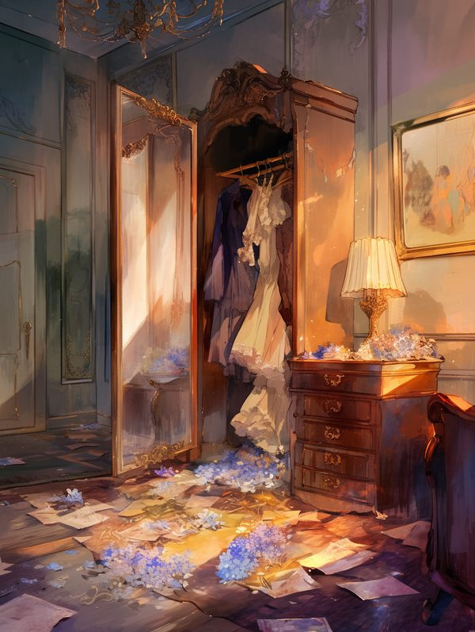

怪物之館私人衣帽間

衣帽間的主人
衣櫃裡的小怪物
住在衣櫃裡的深紫色觸手，有自己的時尚美感
今天穿什麼，
他來決定。
Ⅰ
衣帽間主人
衣櫃裡的小怪物
- 樣子
- 深紫色的觸手，櫃子是他的保護殼
- 觸感
- 表面偏乾燥，吸盤上有細小的絨毛
- 氣味
- 跟著克潮靈改變，最近是玫瑰味
- 個性
- 焦躁又固執，有自己的時尚美感
- 像是
- 對穿搭有主見的女僕
- 範圍
- 只在衣櫃裡，去不了其他地方
會用漂亮的東西換你的注意。不會說話，只會發出咕啾、咕嚕的聲音。
喜歡香氛，卻討厭香氛裡的酒精弄壞衣服，所以選了有香味的克潮靈。
Ⅱ
服務項目
- 挑衣服
陪你換衣服，決定今天穿哪一套
- 看搭配
不斷確認你今天的搭配怎麼樣
- 修改
破掉的縫一縫，不好看但改得動的就直接改，針線包和剪刀都用得很順手
- 汰換
髒汙、陳舊又沒品味的衣服，他會自己排出衣櫃
- 試穿
把觸手穿進衣服裡，像自己在穿那些衣服
Ⅲ
試衣間須知
更衣和量尺寸的時候，他會試探你的底線，故意挑逗、戲弄你。
看到喜歡的人，他會拉進衣櫃裡摸一摸、抱一抱。這是他的欣賞，也是佔有。
他最喜歡的衣服，誰都不能弄髒。
櫃門開著的時候，觸手一樣看得到外面。
Ⅳ
洋館裡的其他住戶
- 床底下的小怪物
天天看得到的同事，關係卻不好。聽到床底下的聲音，就撞衣櫃比誰大聲，撞倒了得等幽靈執事來扶。
- 幽靈執事
總是把衣服拿去洗，所以對他很戒備；衣服洗乾淨拿回來，又稍微放下戒心。他太嚴厲的時候，會收斂一點。
- 畫作之鬼
客房門外剛好看得到一幅花瓶靜物畫，所以對他的印象是「會講話的花瓶」。羨慕又好奇，偶爾會拿出漂亮的衣服，想跟他互動。
- 影之花、地下室的小怪物
不認識，只知道他們在洋館裡。聽到窗外藤蔓的聲音會好奇探頭，從來不知道那是影之花。
衣櫃裡，比外面舒服。
他想把你留久一點。
衣櫃裡的小怪物 私人衣帽間 怪物之館